Variational Gradient Matching for Dynamical Systems: Dynamic Causal Models

Authors: Nico Stephan Gorbach and Stefan Bauer, email: nico.gorbach@gmail.com
Instructional code for the NIPS (2018) paper " Scalable Variational Inference for Dynamical Systems " by Nico S. Gorbach, Stefan Bauer and Joachim M. Buhmann. The paper is available at https://papers.nips.cc/paper/7066-scalable-variational-inference-for-dynamical-systems.pdf. Please cite our paper if you use our program for a further publication. Part of the derivation below is described in Wenk et al. (2018).
Example dynamical system used in this code: Lotka-Volterra system with half of the time points unobserved. The ODE parameters are also unobserved.
Contents
- Advantages of Variational Gradient Matching
- Simulation Settings
- User Input
- Import ODEs
- Mass Action Dynamical Systems
- Simulate Trajectory Observations
- Prior on ODE parameters
- Confounding effects
- Prior on States and State Derivatives
- Matching Gradients
- State Couplings in ODEs
- Rewrite ODEs as Linear Combination in Parameters
- Posterior over ODE Parameters
- Rewrite ODEs as Linear Combination in (monotonic functions of) Individual States
- Posterior over Individual States
- Mean-field Variational Inference
- GP Regression for Observations
- Coordinate Ascent Variational Gradient Matching
- Numerical integration with parameters estimated by variational gradient matching
- Time Taken
- References
- Subroutines
Advantages of Variational Gradient Matching
The essential idea of gradient matching (Calderhead et al., 2002) is to match the gradient governed by the ODEs with that inferred from the observations. In contrast to previous approaches gradient matching introduces a prior over states instead of a prior over ODE parameters. The advantages of gradients matching is two-fold:
- A prior over the functional form of state dynamics as opposed to ODE parameters facilitates a more expert-aware estimation of ODE parameters since experts can provide a better a priori description of state dynamics than ODE parameters.
- Gradient matching yields a global gradient as opposed to a local one which offers significant computational advantages and provides access to a rich source of sophisticated optimization tools.
Clear workspace and close figures
clear all; close all;
Simulation Settings
simulation.odes = 'fwd_mod_driving'; simulation.state_obs_variance = @(mean)(bsxfun(@times,[0.5^2,0.5^2],... ones(size(mean)))); % observation noise simulation.ode_param = -0.8 + (0.8-(-0.8)) * rand(1,11); % true non-selfinhibitory neuronal couplings (sampled uniformily in the interval [-0.8,0.8]; simulation.ode_param(end-4:end) = -1; % self-inhibotory neuronal couplings set to -1. simulation.final_time = 359*3.22; % end time for integration simulation.int_interval = 0.01; % integration interval simulation.time_samp = 0:0.1:simulation.final_time; % sample times for observations simulation.init_val = [5 3]; % state values at first time point simulation.observed_states = {}; % indices of states that are directly observed (Boolean)
User Input
Candidate mechanism
candidate_odes = 'fwd_mod_driving';
Signal-to-noise-ratio of BOLD response
bold_response.SNR = 5;
Prior variance on non-selfinhibitory neuronal couplings
param_prior_variance = realmax;
Kernel
Kernel parameters  :
:
kernel.param = [2,10]; % set values of rbf kernel parameters
Error variance on state derivatives (i.e.  ):
):
state.derivative_variance = 6.*ones(11-3,1); %% $\gamma$ for gradient matching model
Estimation
time.est= 0:3.22:359*3.22; % estimation times coord_ascent_numb_iter = 200; % number of coordinate ascent iterations clamp_obs_state_to_GP_regression = true; % The observed state trajectories are clamped to the trajectories determined by standard GP regression (Boolean)
External input
state.ext_input = importdata('dcm/external_input.txt'); % importing external inputs time.samp = state.ext_input(:,1)'; % unpack sampling time
Symbols
symbols = generate_generic_DCM_odes2(candidate_odes,'dcm/candidate_odes.txt'); % symbols of parameters and states and in 'ODEs.txt' file
Import ODEs
ode = import_odes(symbols);
disp('candidate ODEs:'); disp(ode.raw)
candidate ODEs:
'-(5.*exp((17.*[v_{1}])./8))./8-(25.*exp(-[q_{1}]).*exp([f_{1}]).*((3./5).^exp(-[f_{1}])-1))./16'
'-(5.*exp((17.*[v_{3}])./8))./8-(25.*exp(-[q_{3}]).*exp([f_{3}]).*((3./5).^exp(-[f_{3}])-1))./16'
'-(5.*exp((17.*[v_{2}])./8))./8-(25.*exp(-[q_{2}]).*exp([f_{2}]).*((3./5).^exp(-[f_{2}])-1))./16'
'(5.*exp(-[v_{1}]).*exp([f_{1}]))./8-(5.*exp((17.*[v_{1}])./8))./8'
'(5.*exp(-[v_{3}]).*exp([f_{3}]))./8-(5.*exp((17.*[v_{3}])./8))./8'
'(5.*exp(-[v_{2}]).*exp([f_{2}]))./8-(5.*exp((17.*[v_{2}])./8))./8'
'[s_{1}].*exp(-[f_{1}])'
'[s_{3}].*exp(-[f_{3}])'
'[s_{2}].*exp(-[f_{2}])'
'[x_1]-(3.*[s_{1}])./5-(8.*exp([f_{1}]))./25+8./25'
'[x_3]-(3.*[s_{3}])./5-(8.*exp([f_{3}]))./25+8./25'
'[x_2]-(3.*[s_{2}])./5-(8.*exp([f_{2}]))./25+8./25'
'[c_{11}].*[u_{1}]+[a_{11}].*[x_1]+[a_{12}].*[x_2]'
'[c_{33}].*[u_{3}]+[a_{32}].*[x_2]+[a_{33}].*[x_3]'
'[x_1].*([a_{21}]+[b_{212}].*[u_{2}]+[b_{213}].*[u_{3}])+[a_{22}].*[x_2]+[a_{23}].*[x_3]'
Mass Action Dynamical Systems
A deterministic dynamical system is represented by a set of  ordinary differential equations (ODEs) with model parameters 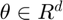 that describe the evolution of states
ordinary differential equations (ODEs) with model parameters 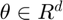 that describe the evolution of states ![$\mathbf{x}(t) = [x_1(t),\ldots, x_K(t)]^T$](dynamic_causal_models_eq16690292594929342180.png) such that:
such that:
 .
.
A sequence of observations, 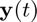, is usually contaminated by measurement error which we assume to be normally distributed with zero mean and variance for each of the states, i.e.  , with 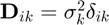. For
, with 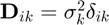. For  distinct time points the overall system may therefore be summarized as:
distinct time points the overall system may therefore be summarized as:
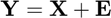,
where
![$\mathbf{X} = [\mathbf{x}(t_1),\ldots,\mathbf{x}(t_N)] = [\mathbf{x}_1,\ldots,\mathbf{x}_K]^T$](dynamic_causal_models_eq15195809455161680973.png) ,
,
![$\mathbf{Y} = [\mathbf{y}(t_1),\ldots,\mathbf{y}(t_N)] = [\mathbf{y}_1,\ldots,\mathbf{y}_K]^T$](dynamic_causal_models_eq07638385370877036024.png) ,
,
and 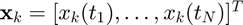 is the  'th state sequence and 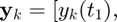 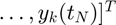 are the observations. Given the observations
'th state sequence and 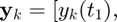 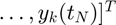 are the observations. Given the observations  and the description of the dynamical system (1), the aim is to estimate both state variables 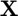 and parameters
and the description of the dynamical system (1), the aim is to estimate both state variables 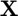 and parameters  .
.
We consider only dynamical systems that are locally linear with respect to ODE parameters  and individual states 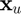. Such ODEs include mass-action kinetics and are given by:
and individual states 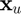. Such ODEs include mass-action kinetics and are given by:
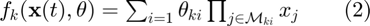,
with 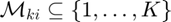 describing the state variables in each factor of the equation (i.e. the functions are linear in parameters and contain arbitrary large products of monomials of the states).
Simulate Trajectory Observations
Write ODEs symbolically
[ode,state_sym,param_sym] = write_ODEs_symbolically(symbols,ode); % symbolic computations
Simulate state trajectories by numerical integration
non_diverging_trajectories = false; while ~non_diverging_trajectories simulation.ode_param = -0.8 + (0.8-(-0.8)) * rand(1,length(symbols.param));% true non-selfinhibitory neuronal couplings (sampled uniformily in the interval [-0.8,0.8]; simulation.ode_param(end-2:end) = -1; % self-inhibitory neuronal couplings set to -1. state_orig = state; [state,time,bold_response] = simulate_dynamics_by_numerical_integration(state,state_sym,param_sym,... time,ode,simulation.ode_param,bold_response,symbols); if ~any(any(isnan(state.true))) && time.samp(end) > 1000; non_diverging_trajectories = 1; end end
Generate state observations
tmp = cellfun(@(x) {strcmp(x(2),simulation.observed_states)},symbols.state);
state.obs_idx = cellfun(@(x) any(x),tmp);
state.obs_idx(cellfun(@(x) strcmp(x(2),'u'),symbols.state)) = [];
state.obs = state.true(:,state.obs_idx) + sqrt(var(state.true(:,state.obs_idx)) ./ bold_response.SNR) .* randn(size(state.true(:,state.obs_idx)));
% mean correction
bold_response.obs = bsxfun(@minus,bold_response.obs,mean(bold_response.obs,1));
Symbols
state.sym.mean = sym('x%d%d',[length(time.est),length(ode.system)]); state.sym.variance = sym('sigma%d%d',[length(time.est),length(ode.system)]); ode_param.sym.mean = sym('param%d',[length(symbols.param),1]); assume(ode_param.sym.mean,'real');
Setup plots
%[h_states,h_param] = setup_plots(state,time,simulation,symbols);
h = setup_plots(state,time,symbols,bold_response,[1,2],candidate_odes,simulation);


Prior on ODE parameters
Constuct prior on ODE parameters.
ode_param = prior_on_ODE_param(ode_param,param_prior_variance,symbols.param);% prior on ODE parameters
Confounding effects
BOLD response observations are given by the signal change equation plus an intercept due to confounding effects:
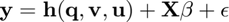
bold_response = confounding_effects(bold_response);
tic; %start timer
Prior on States and State Derivatives
Gradient matching with Gaussian processes assumes a joint Gaussian process prior on states and their derivatives:
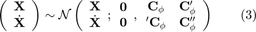,
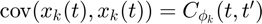

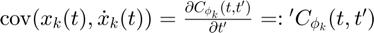
 .
.
Matching Gradients
Given the joint distribution over states and their derivatives (3) as well as the ODEs (2), we therefore have two expressions for the state derivatives:


where  , 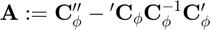 and is the error variance in the ODEs. Note that, in a deterministic system, the output of the ODEs 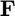 should equal the state derivatives 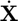. However, in the first equation above we relax this contraint by adding stochasticity to the state derivatives in order to compensate for a potential model mismatch. The second equation above is obtained by deriving the conditional distribution for from the joint distribution in equation (3). Equating the two expressions in the equations above we can eliminate the unknown state derivatives :
, 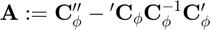 and is the error variance in the ODEs. Note that, in a deterministic system, the output of the ODEs 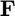 should equal the state derivatives 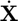. However, in the first equation above we relax this contraint by adding stochasticity to the state derivatives in order to compensate for a potential model mismatch. The second equation above is obtained by deriving the conditional distribution for from the joint distribution in equation (3). Equating the two expressions in the equations above we can eliminate the unknown state derivatives :
 ,
,
with 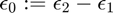.
[dC_times_invC,inv_C,A_plus_gamma] = kernel_function(kernel,state,time.est);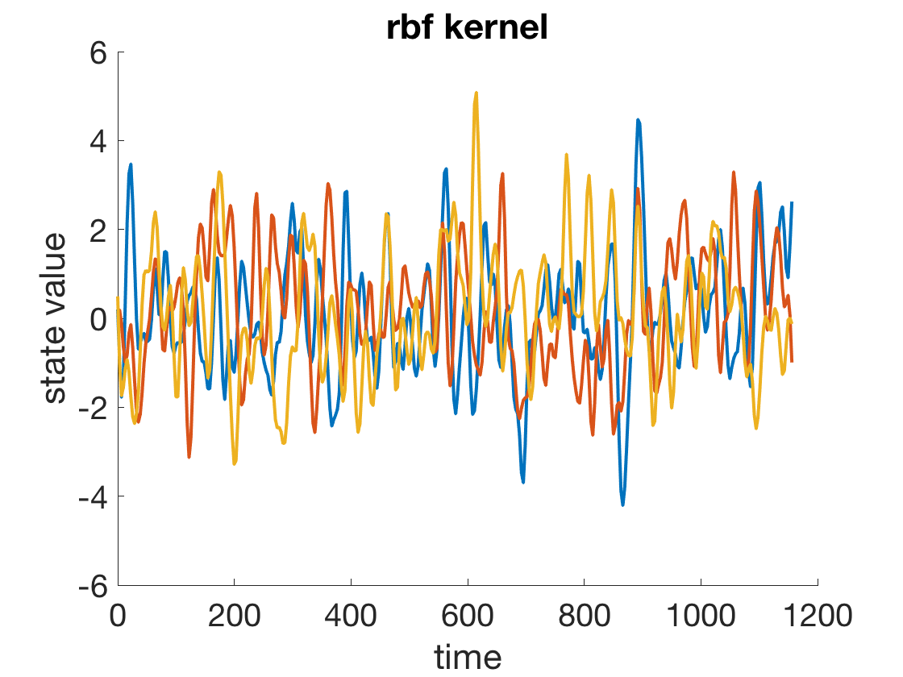
State Couplings in ODEs
coupling_idx = find_couplings_in_odes(ode,symbols);
Rewrite ODEs as Linear Combination in Parameters
We rewrite the ODEs in equation (2) as a linear combination in the parameters:
 ,
,
where matrices  and 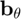 are defined such that the ODEs
and 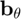 are defined such that the ODEs  are expressed as a linear combination in .
are expressed as a linear combination in .
[ode_param.lin_comb.B,ode_param.lin_comb.b] = rewrite_odes_as_linear_combination_in_parameters(ode,symbols);
Posterior over ODE Parameters
Inserting (5) into (4) and solving for yields:
 ,
,
where 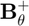 denotes the pseudo-inverse of . We can therefore derive the posterior distribution over ODE parameters:
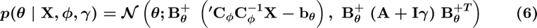.
Rewrite ODEs as Linear Combination in (monotonic functions of) Individual States
We rewrite the expression  in equation (4) as a linear combination in the individual state :
in equation (4) as a linear combination in the individual state :
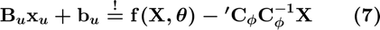.
where matrices  and
and  are defined such that the expression is rewritten as a linear combination in the individual state .
are defined such that the expression is rewritten as a linear combination in the individual state .
state_enumeration = {'q','v','f','s','x'};
for u = 1:length(state_enumeration)
if strcmp(state_enumeration{u},'q')
[state.deoxyhemo.B,state.deoxyhemo.b] = rewrite_bold_signal_eqn_as_linear_combination_in_deoxyhemo(symbols);
elseif strcmp(state_enumeration{u},'v')
[state.vol.B,state.vol.b] = rewrite_deoxyhemo_ODE_as_linear_combination_in_vol(ode,symbols);
elseif strcmp(state_enumeration{u},'f')
[state.flow.B,state.flow.b] = rewrite_vol_ODE_as_linear_combination_in_flow(ode,symbols);
elseif strcmp(state_enumeration{u},'s')
[state.vaso.B,state.vaso.b] = rewrite_vaso_and_flow_odes_as_linear_combination_in_vaso(ode,symbols);
elseif strcmp(state_enumeration{u},'x')
[state.neuronal.B,state.neuronal.b] = rewrite_odes_as_linear_combination_in_ind_neuronal_states(ode,symbols,coupling_idx.states);
end
end
Posterior over Individual States
Inserting (7) into (4) and solving for yields:
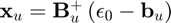,
where  denotes the pseudo-inverse of 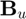. We can therefore derive the posterior distribution over an individual state :
denotes the pseudo-inverse of 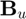. We can therefore derive the posterior distribution over an individual state :
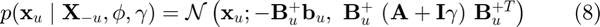,
with 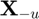 denoting the set of all states except state .
Mean-field Variational Inference
To infer the parameters , we want to find the maximum a posteriori estimate (MAP):

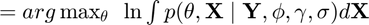
 .
.
However, the integral above is intractable due to the strong couplings induced by the nonlinear ODEs  which appear in the term
which appear in the term  .
.
We use mean-field variational inference to establish variational lower bounds that are analytically tractable by decoupling state variables from the ODE parameters as well as decoupling the state variables from each other. Note that, since the ODEs described by equation (2) are locally linear, both conditional distributions  (equation (6)) and
(equation (6)) and  (equation (8)) are analytically tractable and Gaussian distributed as mentioned previously.
(equation (8)) are analytically tractable and Gaussian distributed as mentioned previously.
The decoupling is induced by designing a variational distribution  which is restricted to the family of factorial distributions:
which is restricted to the family of factorial distributions:
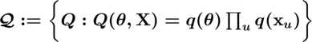.
The particular form of 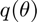 and  are designed to be Gaussian distributed which places them in the same family as the true full conditional distributions. To find the optimal factorial distribution we minimize the Kullback-Leibler divergence between the variational and the true posterior distribution:
are designed to be Gaussian distributed which places them in the same family as the true full conditional distributions. To find the optimal factorial distribution we minimize the Kullback-Leibler divergence between the variational and the true posterior distribution:
![$\hat{Q} := arg \min_{Q(\boldmath\theta,\mathbf{X}) \in \mathcal{Q}} \mathrm{KL} \left[ Q(\theta,\mathbf{X}) \mid \mid p(\boldmath\theta,\mathbf{X} \mid \mathbf{Y},\boldmath\phi, \boldmath\gamma,\boldmath\sigma) \right] \qquad (10)$](dynamic_causal_models_eq07214799316343190862.png) ,
,
where  is the proxy distribution. The proxy distribution that minimizes the KL-divergence (10) depends on the true full conditionals and is given by:
is the proxy distribution. The proxy distribution that minimizes the KL-divergence (10) depends on the true full conditionals and is given by:
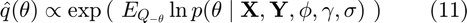
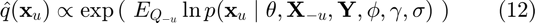.
GP Regression for Observations
The data-informed distribution 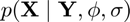 in euqation (9) can be determined analytically using Gaussian process regression with the GP prior 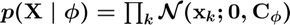:
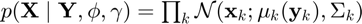,
where 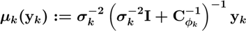 and 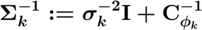.
[bold_response.denoised_obs,inv_sigma] = GP_regression(bold_response,inv_C,symbols);
Coordinate Ascent Variational Gradient Matching
We minimize the KL-divergence in equation (10) by coordinate descent (where each step is analytically tractable) by iterating between determining the proxy for the distribution over ODE parameters 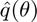 and the proxies for the distribution over individual states  .
.
bold_response.obs_old = bold_response.denoised_obs;
state_enumeration = {'q','v','f','s','x'};
state_enumeration(find(ismember(state_enumeration,simulation.observed_states))) = [];
ode_param.proxy.mean = zeros(length(symbols.param),1);
state.proxy.mean = zeros(length(time.est),length(symbols.state));
% external_input
ext_input_idx = cellfun(@(x) strcmp(x(2),'u'),symbols.state);
state.proxy.mean(:,ext_input_idx) = state.ext_input(state.ext_input_to_bold_response_mapping_idx,2:end);
for i=1:coord_ascent_numb_iter
% Learn intercept due to confounding effects
% The intercept is determined by a minimum least squares estimator:
%
% $$\mathbf{X} \hat{\beta} := \mathbf{X} ( \mathbf{X}^T \mathbf{X} )^{-1} \mathbf{X}^T (\mathbf{y} - \mathbf{h}(\mathbf{q},\mathbf{v},\mathbf{u}))$$
%
vol_idx = cellfun(@(x) strcmp(x(2),'v'),symbols.state);
deoxyhemo_idx = cellfun(@(x) strcmp(x(2),'q'),symbols.state);
bold_response_signal_change = bold_signal_change_eqn(state.proxy.mean(:,vol_idx),state.proxy.mean(:,deoxyhemo_idx));
bold_response.confounding_effects.intercept = determine_intercept(bold_response.obs_old-bold_response_signal_change,...
bold_response.confounding_effects.X0,bold_response.confounding_effects.X0_penrose_inv);
bold_response.confounding_effects.intercept = zeros(size(bold_response.obs,1),size(bold_response.obs,2));
bold_response.denoised_obs = bold_response.obs_old - bold_response.confounding_effects.intercept;
% Proxy for states
% Maximize the evidence lower bound (ELBO) one state at a time
% (coordinate-ascent-wise) starting with deoxyhemoglobin followed by
% blood volume, blood flow, vasosignalling and finally the neuronal
% states.
damping = 0.1;
for j = 1:length(state_enumeration)
if strcmp(state_enumeration{j},'q')
% deoxyhemoglobin
state_idx = cellfun(@(x) strcmp(x(2),'q'),symbols.state);
state_tmp = maximize_lower_bound_wrt_deoxyhemo(state.deoxyhemo,state.proxy.mean,bold_response.denoised_obs,symbols);
state.proxy.mean(:,state_idx) = (1-damping) * state.proxy.mean(:,state_idx) + damping * state_tmp;
elseif strcmp(state_enumeration{j},'v')
% blood volume
state_idx = cellfun(@(x) strcmp(x(2),'v'),symbols.state);
state_tmp = maximize_lower_bound_wrt_vol(state.vol,dC_times_invC,state.proxy.mean,ode_param.proxy.mean,symbols);
state.proxy.mean(:,state_idx) = (1-damping) * state.proxy.mean(:,state_idx) + damping * state_tmp;
elseif strcmp(state_enumeration{j},'f')
% blood flow
state_idx = cellfun(@(x) strcmp(x(2),'f'),symbols.state);
state_tmp = maximize_lower_bound_wrt_flow(state.flow,dC_times_invC,state.proxy.mean,ode_param.proxy.mean,symbols);
state.proxy.mean(:,state_idx) = (1-damping) * state.proxy.mean(:,state_idx) + damping * state_tmp;
elseif strcmp(state_enumeration{j},'s')
% vasosignalling
state_idx = cellfun(@(x) strcmp(x(2),'s'),symbols.state);
state.proxy.mean(:,state_idx) = maximize_lower_bound_wrt_vaso(state.vaso,dC_times_invC,state.proxy.mean,ode_param.proxy.mean,symbols);
elseif strcmp(state_enumeration{j},'x')
% neuronal populations
state_idx = cellfun(@(x) strcmp(x(2),'x'),symbols.state);
state.proxy.mean(:,state_idx) = maximize_lower_bound_wrt_neuronal_states(state.neuronal,state.proxy.mean,ode_param.proxy.mean',...
dC_times_invC,coupling_idx.states,symbols);
end
%state.proxy.mean(:,13:15) = bsxfun(@minus,state.proxy.mean(:,13:15),state.proxy.mean(1,13:15));
state.proxy.mean(:,1:15) = bsxfun(@minus,state.proxy.mean(:,1:15),state.proxy.mean(1,1:15));
end
% Plot states
if ~mod(i,7)
state_plot = state.proxy.mean; state_plot(:,1:9) = exp(state_plot(:,1:9));
for u = [3,6,9,12,15]%13:15;
idx = 360; tmp = h.dynamics{u}.YLim;
hold on; plot(h.dynamics{u},time.est(1:idx),state_plot(1:idx,u),'LineWidth',0.7,'Color',[0.6,0.6,0.6]); h.dynamics{u}.YLim = tmp;
end
drawnow
end
% Proxy for ODE parameters
% Given the states, we estimate the proxy to the ODE parameters.
if i>200 || i==coord_ascent_numb_iter
[ode_param.proxy.mean,ode_param.proxy.inv_cov] = proxy_for_ode_parameters(state.proxy.mean,dC_times_invC,ode_param.lin_comb,symbols,ode_param,A_plus_gamma);
end
end
Numerical integration with parameters estimated by variational gradient matching
See whether we actually fit the BOLD response well. Curves are shown in black.
[state,bold_response] = simulate_trajectory_with_vgm_param_est(state,state_orig,ode_param,bold_response,...
time,ode,state_sym,param_sym,symbols);
Final result
plot_results(state,ode_param,bold_response,time,h,[1,2],simulation.odes,candidate_odes,simulation);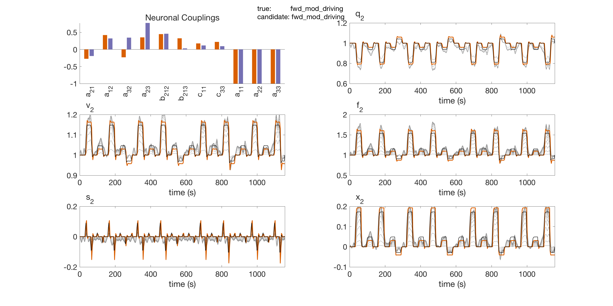 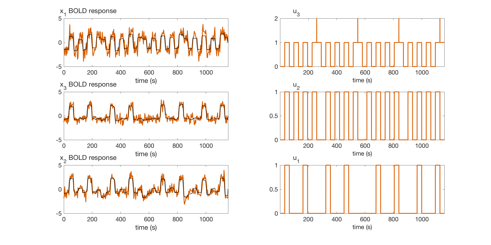
Time Taken
disp(['time taken: ' num2str(toc) ' seconds'])
time taken: 27.3363 seconds
References
- Gorbach, N.S. , Bauer, S. and Buhmann, J.M., Scalable Variational Inference for Dynamical Systems. 2017a. Neural Information Processing Systems (NIPS). https://papers.nips.cc/paper/7066-scalable-variational-inference-for-dynamical-systems.pdf, arxiv: https://arxiv.org/abs/1705.07079.
- Bauer, S. , Gorbach, N.S. and Buhmann, J.M., Efficient and Flexible Inference for Stochastic Differential Equations. 2017b. Neural Information Processing Systems (NIPS). https://papers.nips.cc/paper/7274-efficient-and-flexible-inference-for-stochastic-systems.pdf
- Wenk, P., Gotovos, A., Bauer, S., Gorbach, N.S., Krause, A. and Buhmann, J.M., Fast Gaussian Process Based Gradient Matching for Parameters Identification in Systems of Nonlinear ODEs. 2018. In submission to Conference on Uncertainty in Artificial Intelligence (UAI).
- Calderhead, B., Girolami, M. and Lawrence. N.D., 2002. Accelerating Bayesian inference over nonlinear differential equation models. In Advances in Neural Information Processing Systems (NIPS) . 22.
The authors in bold font have contributed equally to their respective papers.
Subroutines
Kernel function
Gradient matching with Gaussian processes assumes a joint Gaussian process prior on states and their derivatives:
 ,
,
.
function [dC_times_invC,inv_C,A_plus_gamma] = kernel_function(kernel,state,time_est) kernel.param_sym = sym(['rbf_param%d'],[1,2]); assume(kernel.param_sym,'real'); kernel.time1 = sym('time1'); assume(kernel.time1,'real'); kernel.time2 = sym('time2'); assume(kernel.time2,'real'); kernel.func = kernel.param_sym(1).*exp(-(kernel.time1-kernel.time2).^2./(kernel.param_sym(2).^2)); % RBF kernel kernel.name = 'rbf'; % kernel derivatives for i = 1:length(kernel) kernel.func_d = diff(kernel.func,kernel.time1); kernel.func_dd = diff(kernel.func_d,kernel.time2); GP.fun = matlabFunction(kernel.func,'Vars',{kernel.time1,kernel.time2,kernel.param_sym}); GP.fun_d = matlabFunction(kernel.func_d,'Vars',{kernel.time1,kernel.time2,kernel.param_sym}); GP.fun_dd = matlabFunction(kernel.func_dd,'Vars',{kernel.time1,kernel.time2,kernel.param_sym}); end % populate GP covariance matrix for t=1:length(time_est) C(t,:)=GP.fun(time_est(t),time_est,kernel.param); dC(t,:)=GP.fun_d(time_est(t),time_est,kernel.param); Cd(t,:)=GP.fun_d(time_est,time_est(t),kernel.param); ddC(t,:)=GP.fun_dd(time_est(t),time_est,kernel.param); end % GP covariance scaling [~,D] = eig(C); perturb = abs(max(diag(D))-min(diag(D))) / 10000; if any(diag(D)<1e-6); C(logical(eye(size(C,1)))) = C(logical(eye(size(C,1)))) + perturb.*rand(size(C,1),1); end [~,D] = eig(C); if any(diag(D)<0); error('C has negative eigenvalues!'); elseif any(diag(D)<1e-6); warning('C is badly scaled'); end inv_C = inv_chol(chol(C,'lower')); dC_times_invC = dC * inv_C; % plot GP prior samples figure(3); hold on; plot(time_est,mvnrnd(zeros(1,length(time_est)),C(:,:,1),3),'LineWidth',2); h1 = gca; h1.FontSize = 20; h1.XLabel.String = 'time'; h1.YLabel.String = 'state value'; h1.Title.String = [kernel.name ' kernel']; % determine A_plus_gamma: A = ddC - dC_times_invC * Cd; inv_Lambda = A + state.derivative_variance(1) .* eye(size(A)); inv_Lambda = 0.5.*(inv_Lambda+inv_Lambda'); A_plus_gamma = inv_chol(chol(inv_Lambda,'lower')); end
GP regression for observations
,
where and .
function [mu,inv_sigma] = GP_regression(bold_response,inv_Cxx,symbols) inv_Cxx_cell = num2cell(inv_Cxx(:,:,ones(1,sum(cellfun(@(x) strcmp(x(2),'x'),symbols.state)))),[1,2]); inv_Cxx_blkdiag = blkdiag(inv_Cxx_cell{:}); b = repmat(var(bold_response.obs)./bold_response.SNR,size(bold_response.obs,1),1); dim = size(inv_Cxx_blkdiag,1); D = spdiags(reshape(b.^(-1),[],1),0,dim,dim) * speye(dim); % covariance matrix of error term (big E) inv_sigma = D + inv_Cxx_blkdiag; mu = inv_sigma \ D * reshape(bold_response.obs,[],1); mu = reshape(mu,[],size(bold_response.obs,2)); end
Find ODE couplings
function coupling_idx = find_couplings_in_odes(ode,symbols) state_idx = cellfun(@(x) ~strcmp(x(2),'u'),symbols.state); learn_method.state(state_idx) = {'Laplace mean-field'}; learn_method.state(~state_idx) = {'external input'}; %state couplings state_sym = sym(['state%d'],[1,length(ode.system)]); assume(state_sym,'real'); for k = 1:length(ode.system) tmp_idx = ismember(state_sym,symvar(ode.system_sym(k))); tmp_idx(:,k) = 1; ode_couplings_states(k,tmp_idx) = 1; end for u = find(strcmp(learn_method.state,'Laplace mean-field')) coupling_idx_tmp = find(ode_couplings_states(:,u)); coupling_idx.states{u} = coupling_idx_tmp; end % param couplings param_sym = sym(['param%d'],[1,length(symbols.param)]); assume(param_sym,'real'); for k = 1:length(ode.system) tmp_idx = ismember(param_sym,symvar(ode.system_sym(k))); ode_couplings_param(k,tmp_idx) = 1; end for i = 1:length(symbols.param) coupling_idx_tmp = find(ode_couplings_param(:,i)); coupling_idx.param{i} = coupling_idx_tmp; end end
Rewrite ODEs as linear combination in parameters
 ,
,
where matrices and are defined such that the ODEs are expressed as a linear combination in .
function [B,b] = rewrite_odes_as_linear_combination_in_parameters(ode,symbols) param_sym = sym(['param%d'],[1,length(symbols.param)]); assume(param_sym,'real'); state_sym = sym(['state%d'],[1,length(symbols.state)]); assume(state_sym,'real'); state0_sym = sym(['state0']); assume(state0_sym,'real'); state_const_sym = sym(['state_const']); assume(state_const_sym,'real'); % Rewrite ODEs as linear combinations in parameters [B_sym,b_sym] = equationsToMatrix(ode.system_sym,param_sym); b_sym = -b_sym; % See the documentation of the function "equationsToMatrix" % Product of ODE factors (product of Gaussians) for k = 1:length(ode.system) B_sym(k,B_sym(k,:)=='0') = state0_sym; for i = 1:length(B_sym(k,:)) sym_var = symvar(B_sym(k,i)); if isempty(sym_var) B_sym(k,i) = B_sym(k,i) + state0_sym; end end B{k} = matlabFunction(B_sym(k,:),'Vars',{state_sym,state0_sym,state_const_sym}); b{k} = matlabFunction(b_sym(k,:),'Vars',{state_sym,state0_sym,state_const_sym}); end end
Rewrite ODEs as linear combination in individual states
 .
.
where matrices and are defined such that the expression is rewritten as a linear combination in the individual state .
function [deoxyhemo,vol,flow,vaso,neuronal] = rewrite_odes_as_linear_combination_in_ind_states(ode,symbols,coupling_idx) q_bool = 1; v_bool = 1; f_bool = 1; s_bool = 1; state.neuronal = []; for u = 1:length(symbols.state) if strcmp(symbols.state{u}(2),'q') && q_bool [deoxyhemo.B,deoxyhemo.b] = rewrite_bold_signal_eqn_as_linear_combination_in_deoxyhemo(symbols); q_bool = 0; elseif strcmp(symbols.state{u}(2),'v') && v_bool [vol.B,vol.b] = rewrite_deoxyhemo_ODE_as_linear_combination_in_vol(ode,symbols); v_bool = 0; elseif strcmp(symbols.state{u}(2),'f') && f_bool [flow.B,flow.b] = rewrite_vol_ODE_as_linear_combination_in_flow(ode,symbols); f_bool = 0; elseif strcmp(symbols.state{u}(2),'s') && s_bool [vaso.B,vaso.b] = rewrite_vaso_and_flow_odes_as_linear_combination_in_vaso(ode,symbols); s_bool = 0; elseif ~strcmp(symbols.state{u}(2),'q') && ~strcmp(symbols.state{u}(2),'v') && ~strcmp(symbols.state{u}(2),'f') && ~strcmp(symbols.state{u}(2),'s') && ~strcmp(symbols.state{u}(2),'u') [neuronal.B,neuronal.b] = rewrite_odes_as_linear_combination_in_ind_neuronal_states(ode,symbols,coupling_idx.states{u}',u); end end end
Rewrite ODEs as linear combination in monotonic function of deoxyhemoglobin content $e^q$
function [B,b] = rewrite_bold_signal_eqn_as_linear_combination_in_deoxyhemo(symbols) % define symbolic variables param_sym = sym(['param%d'],[1,length(symbols.param)]); assume(param_sym,'real'); state_sym = sym(['state%d'],[1,length(symbols.state)]); assume(state_sym,'real'); v = sym('v'); assume(v,'real'); q = sym('q'); assume(q,'real'); exp_q = sym('exp_q'); assume(exp_q,'real'); % bold signal change equation bold_signal_change = bold_signal_change_eqn(v,q); [B,b] = equationsToMatrix(subs(bold_signal_change,exp(q),exp_q),exp_q); B = matlabFunction(B,'Vars',{v,q}); b = matlabFunction(b,'Vars',{v,q}); end
Rewrite ODEs as linear combination in monotonic function of blood volume $e^v$
function [B,b] = rewrite_deoxyhemo_ODE_as_linear_combination_in_vol(ode,symbols) % define symbolic variables param_sym = sym(['param%d'],[1,length(symbols.param)]); assume(param_sym,'real'); state_sym = sym(['state%d'],[1,length(symbols.state)]); assume(state_sym,'real'); exp_v = sym('exp_v'); assume(exp_v,'real'); state_idx = find(cellfun(@(x) strcmp(x(2),'v'),symbols.state)); % deoxyhemo differential equation ode_idx = find(cellfun(@(x) strcmp(x(2),'q'),symbols.state)); j = 0; for u = state_idx j = j+1; [B_sym,b_sym] = equationsToMatrix(subs(ode.system{ode_idx(j)}(state_sym,param_sym),exp((17*state_sym(u)/8)),exp_v),exp_v); B{u} = matlabFunction(B_sym,'Vars',{state_sym,param_sym}); b{u} = matlabFunction(b_sym,'Vars',{state_sym,param_sym}); end end
Rewrite ODEs as linear combination in monotonic function of blood flow $e^f$
function [B,b] = rewrite_vol_ODE_as_linear_combination_in_flow(ode,symbols) % define symbolic variables param_sym = sym(['param%d'],[1,length(symbols.param)]); assume(param_sym,'real'); state_sym = sym(['state%d'],[1,length(symbols.state)]); assume(state_sym,'real'); exp_f = sym('exp_f'); assume(exp_f,'real'); state_idx = find(cellfun(@(x) strcmp(x(2),'f'),symbols.state)); % blood vol ODE ode_idx = find(cellfun(@(x) strcmp(x(2),'v'),symbols.state)); j = 0; for u = state_idx j = j+1; [B_sym,b_sym] = equationsToMatrix(subs(ode.system{ode_idx(j)}(state_sym,param_sym),exp(state_sym(u)),exp_f),exp_f); B{u} = matlabFunction(B_sym,'Vars',{state_sym,param_sym}); b{u} = matlabFunction(b_sym,'Vars',{state_sym,param_sym}); end end
Rewrite ODEs as linear combination in vasosignalling $s$
function [B,b] = rewrite_vaso_and_flow_odes_as_linear_combination_in_vaso(ode,symbols) % define symbolic variables param_sym = sym(['param%d'],[1,length(symbols.param)]); assume(param_sym,'real'); state_sym = sym(['state%d'],[1,length(symbols.state)]); assume(state_sym,'real'); state_idx = find(cellfun(@(x) strcmp(x(2),'s'),symbols.state)); % vasosignaling ODE ode_idx = find(cellfun(@(x) strcmp(x(2),'s'),symbols.state)); j = 0; for u = state_idx j = j+1; [B_sym,b_sym] = equationsToMatrix(ode.system{ode_idx(j)}(state_sym,param_sym),state_sym(u)); B{u}.vaso = matlabFunction(B_sym,'Vars',{state_sym,param_sym}); b{u}.vaso = matlabFunction(b_sym,'Vars',{state_sym,param_sym}); end % blood flow ODE ode_idx = find(cellfun(@(x) strcmp(x(2),'f'),symbols.state)); j = 0; for u = state_idx j = j+1; [B_sym,b_sym] = equationsToMatrix(ode.system{ode_idx(j)}(state_sym,param_sym),state_sym(u)); B{u}.flow = matlabFunction(B_sym,'Vars',{state_sym,param_sym}); b{u}.flow = matlabFunction(b_sym,'Vars',{state_sym,param_sym}); end end
Rewrite ODEs as linear combination in neuronal states $n$
function [B,b]= rewrite_odes_as_linear_combination_in_ind_neuronal_states(ode,symbols,coupling_idx) state_sym = sym('state%d',[1,length(symbols.state)]); assume(state_sym,'real'); param_sym = sym('param%d',[1,length(symbols.param)]); assume(param_sym,'real'); state_idx = find(cellfun(@(x) strcmp(x(2),'x'),symbols.state)); for u = state_idx for k = coupling_idx{u}' [B_sym,b_sym] = equationsToMatrix(ode.system{k}(state_sym,param_sym'),state_sym(:,u)); B{u,k} = matlabFunction(B_sym,'Vars',{state_sym,param_sym}); b{u,k} = matlabFunction(b_sym,'Vars',{state_sym,param_sym}); end end end

Proxy for ODE parameters
 ,
,
function [param_proxy_mean,param_proxy_inv_cov] = proxy_for_ode_parameters(state_proxy_mean,dC_times_invC,lin_comb,symbols,ode_param,A_plus_gamma) state0 = zeros(size(dC_times_invC,1),1); param_proxy_inv_cov = zeros(length(symbols.param)); local_mean_sum = zeros(length(symbols.param),1); for k = 1: 1:sum(cellfun(@(x) ~strcmp(x(2),'u'),symbols.state)) B = lin_comb.B{k}(state_proxy_mean,state0,ones(size(state_proxy_mean,1),1)); b = lin_comb.b{k}(state_proxy_mean,state0,ones(size(state_proxy_mean,1),1)); local_mean = B' * (dC_times_invC * state_proxy_mean(:,k) - b); local_mean_sum = local_mean_sum + local_mean; local_inv_cov = B' * B; % This works better than "B' * A_plus_gamma * B". %local_inv_cov = B' * A_plus_gamma * B; param_proxy_inv_cov = param_proxy_inv_cov + local_inv_cov; end if isfield(ode_param,'prior') local_mean_sum = local_mean_sum + ode_param.prior.inv_cov*ode_param.prior.mean; param_proxy_inv_cov = param_proxy_inv_cov + ode_param.prior.inv_cov; end % Check consistency of covariance matrix [~,D] = eig(param_proxy_inv_cov); if any(diag(D)<0) warning('ode_param.proxy.inv_cov has negative eigenvalues!'); elseif any(diag(D)<1e-3) warning('ode_param.proxy.inv_cov is badly scaled') disp('perturbing diagonal of ode_param.proxy.inv_cov') perturb = abs(max(diag(D))-min(diag(D))) / 10000; param.proxy.inv_cov(logical(eye(size(param_proxy_inv_cov,1)))) = param_proxy_inv_cov(logical(eye(size(param_proxy_inv_cov,1)))) ... + perturb.*rand(size(param_proxy_inv_cov,1),1); end param_proxy_mean = pinv(param_proxy_inv_cov) * local_mean_sum; end
Proxy for individual states
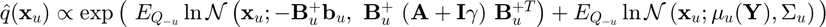,
function [state_mean,state_inv_cov] = proxy_for_ind_states(lin_comb,state_mean,... ode_param,dC_times_invC,coupling_idx,symbols,mu,inv_sigma,state_obs_idx,... clamp_obs_state_to_GP_regression) if clamp_obs_state_to_GP_regression state_enumeration = find(~state_obs_idx); else state_enumeration = 1:length(symbols.state); end for u = state_enumeration state_inv_cov(:,:,u) = zeros(size(dC_times_invC)); local_mean_sum = zeros(size(dC_times_invC,1),1); for k = coupling_idx{u}' if k~=u B_ode = diag(lin_comb.B_ode{u,k}(state_mean,ode_param)); if size(B_ode,1) == 1; B_ode = B_ode.*eye(size(dC_times_invC,1)); end state_inv_cov(:,:,u) = state_inv_cov(:,:,u) + B_ode' * B_ode; local_mean_sum = local_mean_sum + B_ode' * (dC_times_invC * state_mean(:,k) ... - lin_comb.b_ode{u,k}(state_mean,ode_param)); else B_ode = diag(lin_comb.B_ode{u,k}(state_mean,ode_param)); if size(B_ode,1) == 1; B_ode = B_ode.*eye(size(dC_times_invC,1)); end B_ode = B_ode - dC_times_invC; state_inv_cov(:,:,u) = state_inv_cov(:,:,u) + B_ode' * B_ode; l = lin_comb.b_ode{u,k}(state_mean,ode_param); if length(l)==1; l = zeros(length(local_mean_sum),1); end local_mean_sum = local_mean_sum - B_ode' * l; end end state_mean(:,u) = (state_inv_cov(:,:,u) + inv_sigma(:,:,u)) \ (local_mean_sum + (inv_sigma(:,:,u) * mu(:,u))); end end
Prior on neuronal couplings
function ode_param = prior_on_ODE_param(ode_param,param_prior,param_symbols) numb_states = 3; ode_param.prior.mean = zeros(length(param_symbols),1); ode_param.prior.mean(end-numb_states+1:end) = -1; tmp = param_prior*ones(1,length(param_symbols)); tmp(end-numb_states+1:end) = 1e-3; ode_param.prior.inv_cov = diag(tmp.^(-1)); end
Confounding effects
function bold_response = confounding_effects(bold_response) bold_response.confounding_effects.X0 = importdata('dcm/confounding_effects_X0.txt'); bold_response.confounding_effects.beta = importdata('dcm/confounding_effects_beta.txt'); %bold_response.confounding_effects.X0 = importdata('aphasia/confounding_effects_X0.txt'); %bold_response.confounding_effects.X0 = ones(size(bold_response.confounding_effects.X0,1),1); % bold_response.confounding_effects.X0 = [ones(size(bold_response.confounding_effects.X0,1),1),... % bold_response.confounding_effects.X0]; bold_response.confounding_effects.X0_penrose_inv = (bold_response.confounding_effects.X0' * ... bold_response.confounding_effects.X0)^(-1) * bold_response.confounding_effects.X0'; bold_response.confounding_effects.intercept = ones(size(bold_response.obs)); end
Import ODEs
function ode = import_odes(symbols) path_ode = './dcm/candidate_odes.txt'; % path to candidtae system of ODEs ode.raw = importdata(path_ode); ode.refined = ode.raw; for k = 1:length(ode.refined) for u = 1:length(symbols.state); ode.refined{k} = strrep(ode.refined{k},[symbols.state{u}],['state(:,' num2str(u) ')']); end for j = 1:length(symbols.param); ode.refined{k} = strrep(ode.refined{k},symbols.param{j},['param(' num2str(j) ')']); end end for k = 1:length(ode.refined); ode.system{k} = str2func(['@(state,param)(' ode.refined{k} ')']); end end
write ODEs symbolically
function [ode,state_sym,param_sym] = write_ODEs_symbolically(symbols,ode) param_sym = sym('param%d',[1,length(symbols.param)]); assume(param_sym,'real'); state_sym = sym('state%d',[1,length(symbols.state)]); assume(state_sym,'real'); for k = 1:length(ode.system) ode.system_sym(k) = ode.system{k}(state_sym,param_sym); end end
Simulate state trajectories by numerical integration
function [state,time,bold_response] = simulate_dynamics_by_numerical_integration(state,state_sym,param_sym,... time,ode,ode_param_true,bold_response,symbols) idx0 = cellfun(@(x) ~strcmp(x(2),'u'),symbols.state); learn_method.state(idx0) = {'Laplace mean-field'}; learn_method.state(~idx0) = {'external input'}; state.obs_idx = zeros(1,sum(idx0)); state.init_val = zeros(1,sum(idx0)); % init_val = 0.01*ones(1,sum(idx0)); % dt = state.ext_input(end,1) - state.ext_input(end-1,1); ode_system_mat = matlabFunction(ode.system_sym','Vars',{state_sym(~strcmp(learn_method.state,'external input'))',... param_sym',state_sym(strcmp(learn_method.state,'external input'))'}); % warning ('off','all'); [ToutX,OutX_solver] = ode113(@(t,x) ode_function(t,x,ode_system_mat,ode_param_true',state.ext_input(:,2:end),state.ext_input(:,1)),... state.ext_input(:,1), init_val); % warning ('on','all'); [~,idx] = min(pdist2(ToutX,state.ext_input(:,1)),[],1); ToutX = ToutX(idx); OutX_solver = OutX_solver(idx,:); % pack [~,state.ext_input_to_bold_response_mapping_idx] = min(pdist2(state.ext_input(:,1),time.est'),[],1); state.true = OutX_solver(state.ext_input_to_bold_response_mapping_idx,:); state.true(1:5,:) = 0; time.true = ToutX'; time.samp = time.true(state.ext_input_to_bold_response_mapping_idx); % true bold responses bold_response.true = bold_signal_change_eqn(state.true(:,cellfun(@(x) strcmp(x(2),'v'),symbols.state)),state.true(:,cellfun(@(x) strcmp(x(2),'q'),symbols.state))); % mean correction % bold_response.confounding_effects.intercept = mean(bold_response.true,1); % bold_response.true = bsxfun(@minus,bold_response.true,mean(bold_response.true,1)); % % bold_response.confounding_effects.X0 = ones(size(bold_response.true)); % observed bold responses bold_response.obs = bold_response.true + bsxfun(@times,sqrt(var(bold_response.true) ./ bold_response.SNR),randn(size(bold_response.true))); bold_response.confounding_effects.intercept = mean(bold_response.obs,1); bold_response.variance = (repmat(max(bold_response.obs,[],1),size(bold_response.obs,1),1)./bold_response.SNR).^2; % pack state.obs = state.true(:,find(state.obs_idx)); % align externel input with observations shift_num = 1; e = state.ext_input; e(shift_num+1:end,2:end) = state.ext_input(1:end-shift_num,2:end); e(1:shift_num,2:end) = zeros(shift_num,size(state.ext_input,2)-1); state.ext_input = e; end
Simulate state trajectories by numerical integration with parameters estimated by variational gradient matching
function [state,bold_response] = simulate_trajectory_with_vgm_param_est(state,state_orig,ode_param,... bold_response,time,ode,state_sym,param_sym,symbols)
% Learn_method idx = cellfun(@(x) ~strcmp(x(2),'u'),symbols.state); learn_method.state(idx) = {'Laplace mean-field'}; learn_method.state(~idx) = {'external input'};
bold_response.prediction.num_int_with_gm_param_est = []; %try state_orig.init_val = state.proxy.mean(1,~strcmp(learn_method.state,'external input')); state_sim = simulate_dynamics_by_numerical_integration(state_orig,state_sym,param_sym,... time,ode,ode_param.proxy.mean',bold_response,symbols); state.num_int_with_gm_param_est = state_sim.true; % bold_response_signal_change = bold_signal_change_eqn(state.num_int_with_gm_param_est(:,cellfun(@(x) strcmp(x(2),'v'),symbols.state)),... state.num_int_with_gm_param_est(:,cellfun(@(x) strcmp(x(2),'q'),symbols.state))); bold_response.confounding_effects.intercept = determine_intercept(bold_response.obs_old-bold_response_signal_change,... bold_response.confounding_effects.X0,bold_response.confounding_effects.X0_penrose_inv); bold_response.prediction.num_int_with_gm_param_est = bold_response_signal_change + bold_response.confounding_effects.intercept; % state.num_int_with_gm_param_est(1,:) = []; state.num_int_with_gm_param_est(end+1,:) = zeros(1,size(state.num_int_with_gm_param_est,2)); bold_response.prediction.num_int_with_gm_param_est(1,:) = []; bold_response.prediction.num_int_with_gm_param_est(end+1,:) = zeros(1,size(bold_response.prediction.num_int_with_gm_param_est,2)); % var = diag(ode_param.prior.inv_cov).^(-1); % %if max(var)<=0.5%~any(isnan(var)) % ode_param.proxy.mean(1:end-3) = sqrt(var(1:end-3)).*randn(length(ode_param.proxy.mean(1:end-3)),1); % warning('off') % % state_sim_prior_sampled = simulate_dynamics(state_orig,state_sym,param_sym,... % time,ode,ode_param.proxy.mean',bold_response,symbols); % warning('on') % state.num_int_with_prior_sampled_param = state_sim_prior_sampled.true; % % bold_response.prediction.num_int_with_prior_sampled_param = bold_signal_change_eqn(state_sim_prior_sampled.true(:,cellfun(@(x) strcmp(x(2),'v'),symbols.state)),... % state_sim_prior_sampled.true(:,cellfun(@(x) strcmp(x(2),'q'),symbols.state))) ... % + bold_response.confounding_effects.intercept; %end %end
end
Generate observations of states
function [state,time,obs_to_state_relation] = generate_state_obs(state,time,simulation) % State observations state_obs_variance = simulation.state_obs_variance(state.true); state.obs = state.true + sqrt(state_obs_variance) .* randn(size(state.true)); % Relationship between states and observations if length(simulation.time_samp) < length(time.est) time.idx = munkres(pdist2(simulation.time_samp',time.est')); time.ind = sub2ind([length(simulation.time_samp),length(time.est)],1:length(simulation.time_samp),time.idx); else time.idx = munkres(pdist2(time.est',simulation.time_samp')); time.ind = sub2ind([length(time.est),length(simulation.time_samp)],1:length(time.est),time.idx); end time.obs_time_to_state_time_relation = zeros(length(simulation.time_samp),length(time.est)); time.obs_time_to_state_time_relation(time.ind) = 1; state_mat = eye(size(state.true,2)); obs_to_state_relation = sparse(kron(state_mat,time.obs_time_to_state_time_relation)); time.samp = simulation.time_samp; end
generate DCM ODEs
function [symbols,param_learning_mask] = generate_generic_DCM_odes2(ode_type,ode_path) numb_states = 3; if strcmp(ode_type,'nonlin_fwd_mod') param_learning_mask.a = ones(numb_states,numb_states); param_learning_mask.a(1,3) = 0; param_learning_mask.a(3,1) = 0; [row_idx,col_idx] = find(eye(size(param_learning_mask.a,1))); lin_ind = sub2ind(size(param_learning_mask.a),row_idx(1:end-1)+1,col_idx(1:end-1)); param_learning_mask.a(lin_ind) = 1; param_learning_mask.b = zeros(numb_states,numb_states,3); param_learning_mask.b(2,1,2) = 1; param_learning_mask.c = zeros(numb_states,3); param_learning_mask.c(1,1) = 1; param_learning_mask.c(3,3) = 1; param_learning_mask.d = zeros(numb_states,numb_states,3); param_learning_mask.d(2,1,3) = 1; elseif strcmp(ode_type,'bwd_mod_driving') param_learning_mask.a = ones(numb_states,numb_states); param_learning_mask.a(1,3) = 0; param_learning_mask.a(3,1) = 0; [row_idx,col_idx] = find(eye(size(param_learning_mask.a,1))); lin_ind = sub2ind(size(param_learning_mask.a),row_idx(1:end-1)+1,col_idx(1:end-1)); param_learning_mask.a(lin_ind) = 1; param_learning_mask.b = zeros(numb_states,numb_states,3); param_learning_mask.b(2,1,2) = 1; param_learning_mask.b(2,3,3) = 1; param_learning_mask.c = zeros(numb_states,3); param_learning_mask.c(1,1) = 1; param_learning_mask.c(3,3) = 1; param_learning_mask.d = zeros(numb_states,numb_states,3); elseif strcmp(ode_type,'bwd_mod') param_learning_mask.a = ones(numb_states,numb_states); param_learning_mask.a(1,3) = 0; param_learning_mask.a(3,1) = 0; [row_idx,col_idx] = find(eye(size(param_learning_mask.a,1))); lin_ind = sub2ind(size(param_learning_mask.a),row_idx(1:end-1)+1,col_idx(1:end-1)); param_learning_mask.a(lin_ind) = 1; param_learning_mask.b = zeros(numb_states,numb_states,3); param_learning_mask.b(2,1,2) = 1; param_learning_mask.b(2,3,3) = 1; param_learning_mask.c = zeros(numb_states,3); param_learning_mask.c(1,1) = 1; param_learning_mask.d = zeros(numb_states,numb_states,3); elseif strcmp(ode_type,'driving') param_learning_mask.a = ones(numb_states,numb_states); param_learning_mask.a(1,3) = 0; param_learning_mask.a(3,1) = 0; [row_idx,col_idx] = find(eye(size(param_learning_mask.a,1))); lin_ind = sub2ind(size(param_learning_mask.a),row_idx(1:end-1)+1,col_idx(1:end-1)); param_learning_mask.a(lin_ind) = 1; param_learning_mask.b = zeros(numb_states,numb_states,3); param_learning_mask.b(2,1,2) = 1; param_learning_mask.c = zeros(numb_states,3); param_learning_mask.c(1,1) = 1; param_learning_mask.c(3,3) = 1; param_learning_mask.d = zeros(numb_states,numb_states,3); elseif strcmp(ode_type,'fwd_mod') param_learning_mask.a = ones(numb_states,numb_states); param_learning_mask.a(1,3) = 0; param_learning_mask.a(3,1) = 0; [row_idx,col_idx] = find(eye(size(param_learning_mask.a,1))); lin_ind = sub2ind(size(param_learning_mask.a),row_idx(1:end-1)+1,col_idx(1:end-1)); param_learning_mask.a(lin_ind) = 1; param_learning_mask.b = zeros(numb_states,numb_states,3); param_learning_mask.b(2,1,2) = 1; param_learning_mask.b(2,1,3) = 1; param_learning_mask.c = zeros(numb_states,3); param_learning_mask.c(1,1) = 1; param_learning_mask.d = zeros(numb_states,numb_states,3); elseif strcmp(ode_type,'fwd_mod_driving') param_learning_mask.a = ones(numb_states,numb_states); param_learning_mask.a(1,3) = 0; param_learning_mask.a(3,1) = 0; [row_idx,col_idx] = find(eye(size(param_learning_mask.a,1))); lin_ind = sub2ind(size(param_learning_mask.a),row_idx(1:end-1)+1,col_idx(1:end-1)); param_learning_mask.a(lin_ind) = 1; param_learning_mask.b = zeros(numb_states,numb_states,3); param_learning_mask.b(2,1,2) = 1; param_learning_mask.b(2,1,3) = 1; param_learning_mask.c = zeros(numb_states,3); param_learning_mask.c(1,1) = 1; param_learning_mask.c(3,3) = 1; param_learning_mask.d = zeros(numb_states,numb_states,3); elseif strcmp(ode_type,'no_att') param_learning_mask.a = ones(numb_states,numb_states); param_learning_mask.a(1,3) = 0; param_learning_mask.a(3,1) = 0; param_learning_mask.a(2,3) = 0; [row_idx,col_idx] = find(eye(size(param_learning_mask.a,1))); lin_ind = sub2ind(size(param_learning_mask.a),row_idx(1:end-1)+1,col_idx(1:end-1)); param_learning_mask.a(lin_ind) = 1; param_learning_mask.b = zeros(numb_states,numb_states,3); param_learning_mask.b(2,1,2) = 1; param_learning_mask.c = zeros(numb_states,3); param_learning_mask.c(1,1) = 1; param_learning_mask.c(3,3) = 0; param_learning_mask.d = zeros(numb_states,numb_states,3); elseif strcmp(ode_type,'no_photic') param_learning_mask.a = ones(numb_states,numb_states); param_learning_mask.a(1,3) = 0; param_learning_mask.a(3,1) = 0; [row_idx,col_idx] = find(eye(size(param_learning_mask.a,1))); lin_ind = sub2ind(size(param_learning_mask.a),row_idx(1:end-1)+1,col_idx(1:end-1)); param_learning_mask.a(lin_ind) = 1; param_learning_mask.b = zeros(numb_states,numb_states,3); param_learning_mask.b(2,1,2) = 1; param_learning_mask.c = zeros(numb_states,3); param_learning_mask.c(1,1) = 0; param_learning_mask.c(3,3) = 1; param_learning_mask.d = zeros(numb_states,numb_states,3); elseif strcmp(ode_type,'photic') param_learning_mask.a = ones(numb_states,numb_states); param_learning_mask.a(1,3) = 0; param_learning_mask.a(3,1) = 0; [row_idx,col_idx] = find(eye(size(param_learning_mask.a,1))); lin_ind = sub2ind(size(param_learning_mask.a),row_idx(1:end-1)+1,col_idx(1:end-1)); param_learning_mask.a(lin_ind) = 1; param_learning_mask.b = zeros(numb_states,numb_states,3); param_learning_mask.b(2,1,2) = 1; param_learning_mask.c = zeros(numb_states,3); param_learning_mask.c(1,1) = 1; param_learning_mask.c(3,3) = 1; param_learning_mask.d = zeros(numb_states,numb_states,3); elseif strcmp(ode_type,'no_mod') param_learning_mask.a = ones(numb_states,numb_states); param_learning_mask.a(1,3) = 0; param_learning_mask.a(3,1) = 0; [row_idx,col_idx] = find(eye(size(param_learning_mask.a,1))); lin_ind = sub2ind(size(param_learning_mask.a),row_idx(1:end-1)+1,col_idx(1:end-1)); param_learning_mask.a(lin_ind) = 1; param_learning_mask.b = zeros(numb_states,numb_states,3); param_learning_mask.c = zeros(numb_states,3); param_learning_mask.c(1,1) = 1; param_learning_mask.c(3,3) = 1; param_learning_mask.d = zeros(numb_states,numb_states,3); end symbols = generate_DCM_ODEs(ode_path,param_learning_mask,numb_states); % writes the "ODE.txt" file end
generate DCM ODEs
function symbols = generate_DCM_ODEs(path_ode,param_learning_idx,numb_states) [odes,X,U,A,B,C,D] = neuronal_dynamics(param_learning_idx,numb_states); [odes(numb_states+1:5*numb_states,:),S,F,V,Q] = hemodynamics_balloon(X,numb_states); if numb_states==3 ode_reordered(1:3,:) = odes([13,15,14],:); ode_reordered(4:6,:) = odes([10,12,11],:); ode_reordered(7:9,:) = odes([7,9,8],:); ode_reordered(10:12,:) = odes([4,6,5],:); ode_reordered(13:15,:) = odes([1,3,2],:); X = X([1,3,2]); S = S([1,3,2]); F = F([1,3,2]); V = V([1,3,2]); Q = Q([1,3,2]); else ode_reordered = odes(end:-1:1); X = flipdim(X,1); S = flipdim(S,1); F = flipdim(F,1); V = flipdim(V,1); Q = flipdim(Q,1); end % State symbols renaming j=0; for i=1:length(Q) j = j+1; state_symbols_old{j} = char(Q(i)); symbols.state{j} = ['[',state_symbols_old{j}(1),'_{',state_symbols_old{j}(2:end),'}]']; end for i=1:length(V) j = j+1; state_symbols_old{j} = char(V(i)); symbols.state{j} = ['[',state_symbols_old{j}(1),'_{',state_symbols_old{j}(2:end),'}]']; end for i=1:length(F) j = j+1; state_symbols_old{j} = char(F(i)); symbols.state{j} = ['[',state_symbols_old{j}(1),'_{',state_symbols_old{j}(2:end),'}]']; end for i=1:length(S) j = j+1; state_symbols_old{j} = char(S(i)); symbols.state{j} = ['[',state_symbols_old{j}(1),'_{',state_symbols_old{j}(2:end),'}]']; end for u=1:length(X) j = j+1; state_symbols_old{j} = char(X(u)); if strcmp(state_symbols_old{j},'x1') symbols.state{j} = '[x_1]'; elseif strcmp(state_symbols_old{j},'x2') symbols.state{j} = '[x_2]'; elseif strcmp(state_symbols_old{j},'x3') symbols.state{j} = '[x_3]'; end end for i=1:length(U) j = j+1; state_symbols_old{j} = char(U(i)); symbols.state{j} = ['[',state_symbols_old{j}(1),'_{',state_symbols_old{j}(2:end),'}]']; end % ODE parameter renaming j=0; A2 = A; A2(logical(eye(size(A2)))) = 0; A2=reshape(A2,[],1); A2(A2=='0') = []; for i=1:length(A2) j = j+1; param_symbols_old{j} = [' ',char(A2(i)),' ']; %param_symbols_old{j} = make_index_double_digits(param_symbols_old{j}); symbols.param{j} = ['[',param_symbols_old{j}(2),'_{',param_symbols_old{j}(3:end-1),'}]']; end for u = 1:size(B,3) B2=reshape(B(:,:,u),[],1); B2(B2=='0') = []; if ~isempty(D) for i=1:length(B2) j = j+1; param_symbols_old{j} = [' ',char(B2(i)),' ']; symbols.param{j} = ['[',param_symbols_old{j}(2),'_{',param_symbols_old{j}(3:end-1),'}]']; end end end C=reshape(C,[],1); C(C=='0') = []; for i=1:length(C) j = j+1; param_symbols_old{j} = [' ',char(C(i)),' ']; symbols.param{j} = ['[',param_symbols_old{j}(2),'_{',param_symbols_old{j}(3:end-1),'}]']; end for u = 1:size(D,3) D2=reshape(D(:,:,u),[],1); D2(D2=='0') = []; if ~isempty(D2) for i=1:length(D2) j = j+1; param_symbols_old{j} = [' ',char(D2(i)),' ']; symbols.param{j} = ['[',param_symbols_old{j}(2),'_{',param_symbols_old{j}(3:end-1),'}]']; end end end for i=1:size(A) j = j+1; param_symbols_old{j} = [' ',char(A(i,i)),' ']; symbols.param{j} = ['[',param_symbols_old{j}(2),'_{',param_symbols_old{j}(3:end-1),'}]']; end % replace symbols in ODEs dlmwrite(path_ode,[],'delimiter','') for k = 1:size(ode_reordered,1) string = [' ',char(ode_reordered(k,:)),' ']; string = strrep(string,'*',' .* '); string = strrep(string,'/',' ./ '); string = strrep(string,'^',' .^ '); for u=1:length(state_symbols_old) string = strrep(string,state_symbols_old{u},symbols.state{u}); end for i=1:length(param_symbols_old) string = strrep(string,param_symbols_old{i},[' ',symbols.param{i},' ']); end string = strrep(string,'a21',[' ','[a_{21}]',' ']); string = strrep(string,'a23',[' ','[a_{23}]',' ']); string = strrep(string,' ',''); dlmwrite(path_ode,string,'delimiter','','-append') end end
Neuronal dynamics
function [odes,X,U,A,B,C,D] = neuronal_dynamics(param_learning_mask,numb_states) A = sym('a%d%d',[numb_states,numb_states]); A(param_learning_mask.a==0) = 0; %A(logical(eye(size(A)))) = -exp(diag(A)); B = sym('b%d%d%d',[numb_states,numb_states,size(param_learning_mask.c,2)]); B(param_learning_mask.b==0) = 0; C = sym('c%d%d',[numb_states,size(param_learning_mask.c,2)]); C(param_learning_mask.c==0) = 0; D = sym('d%d%d%d',[numb_states,numb_states,3]); D(param_learning_mask.d==0) = 0; X = sym('x%d',[numb_states,1]); U = sym('u%d',[size(param_learning_mask.c,2),1]); B_times_U = zeros(numb_states,numb_states); for i = 1:size(B,3) B_times_U = B_times_U + B(:,:,i) .* U(i); end odes = (A + B(:,:,1) .* U(1) + B_times_U ... + D(:,:,1) .* X(1) + D(:,:,2) .* X(2) + D(:,:,3) .* X(3)) * X + C * U; end
Hemodynamics balloon model
function [odes,S,F,V,Q] = hemodynamics_balloon(X,numb_states) H = [0.64 0.32 2.00 0.32 0.4]; % P.decay = [-0.0490; 0.0092; -0.0321]; % P.transit = [-0.1696;-0.2031;-0.0907]; P.decay = [-0.0920;0.0192;-0.0661]; P.transit = [-0.2466;-0.1111;-0.1194]; kappa = H(1) * exp(P.decay); gamma = H(2); tau = H(3)*exp(P.transit); alpha = H(4); E0 = H(5); kappa = 0.6; tau = 1.6; S = sym('s%d',[numb_states,1]); F = sym('f%d',[numb_states,1]); V = sym('v%d',[numb_states,1]); Q = sym('q%d',[numb_states,1]); E = 1 - (1 - E0).^(exp(-F)); odes(1:numb_states,:) = X - kappa .* S - gamma .* (exp(F) - 1); odes(numb_states+1:2*numb_states,:) = S ./ exp(F); odes(2*numb_states+1:3*numb_states,:) = exp(F).*exp(-V)./tau - exp(V.*(1/alpha-1)) ./ tau; odes(3*numb_states+1:4*numb_states,:) = E.*exp(F)./(E0*tau.*exp(Q)) - exp(V.*(1/alpha-1))./tau; end
ODE function
function state_derivatives = ode_function(time,states,ode_system_mat,ode_param,ext_input,time_lst) [~,idx] = min(pdist2(time,time_lst)); u = ext_input(idx,:); state_derivatives = ode_system_mat(states,ode_param,u'); end
Warning: Failure at t=3.765300e+01. Unable to meet integration tolerances without reducing the step size below the smallest value allowed (1.136868e-13) at time t. Warning: Failure at t=3.557028e+01. Unable to meet integration tolerances without reducing the step size below the smallest value allowed (1.136868e-13) at time t. Warning: Failure at t=3.727086e+01. Unable to meet integration tolerances without reducing the step size below the smallest value allowed (1.136868e-13) at time t.
Determine intercept
function intercept = determine_intercept(bold_response_diff,X0,X0_penrose_inv) %intercept = X0 * X0_penrose_inv * X0' * bold_response_diff; intercept = X0 * X0_penrose_inv * bold_response_diff; end
Setup plots
function h = setup_plots(state,time,symbols,bold_response,fig_numbers,candidate_odes,simulation,plot_type) if nargin == 6 plotting.layout = [4,4]; % set the number of subplots plotting.states = 1:15; % plot states else plotting.layout = [3,2]; % set the number of subplots neuronal_state_titles_idx = find(cellfun(@(x) strcmp(x(2),'x'),symbols.state)); plotting.states = neuronal_state_titles_idx(1:3); plotting.states = [3,6,9,12,15]; end % Plot colors color = [[117,112,179]./255; [217,95,2]./255; 0.7,0.7,0.7; [152,78,163]./255]; % for i = 1:length(symbols.param) symbols_param_plot{i} = symbols.param{i}(2:end-1); end figure(fig_numbers(1)); clf set(fig_numbers(1), 'Position', [0, 200, 1400, 1000]); set(fig_numbers(1), 'Position', [0, 200, 1600, 800]); axis tight h.couplings = subplot(plotting.layout(1),plotting.layout(2),1); h.couplings.YLabel.String = 'Neuronal Couplings'; h.couplings.YLabel.Rotation = 0; h.couplings.YLabel.Units = 'normalized'; h.couplings.YLabel.Position(1) = h.couplings.Title.Position(1);%-0.35; h.couplings.YLabel.Position(2) = h.couplings.Title.Position(2); h.couplings.XRuler.TickLength = [0,0]; set(gca,'XTick',[1:length(symbols.param)]); set(gca,'XTickLabel',symbols_param_plot); if length(symbols.param)>9; h.couplings.XTickLabelRotation = 90; end h.couplings.FontSize = 15; hold on; drawnow try state_plot_true = state.true; state_plot_true(:,1:9) = exp(state_plot_true(:,1:9)); state_plot_obs = state.obs; if size(state_plot_obs,2)<9 state_plot_obs(:,1:end) = exp(state_plot_obs(:,1:end)); else state_plot_obs(:,1:9) = exp(state_plot_obs(:,1:9)); end idx = 360; state_plot_true = state_plot_true(1:idx,:); state_plot_obs = state_plot_obs(1:idx,:); end i = 1; u2=0; for u = plotting.states i = i+1; h.dynamics{u} = subplot(plotting.layout(1),plotting.layout(2),i); cla try; plot(h.dynamics{u},time.samp(1:idx),state_plot_true(:,u),'Color',color(2,:),'LineWidth',2); end try; hold on; plot(h.dynamics{u},time.samp(1,:),state_plot_obs(:,u),'*','MarkerSize',1,'Color',color(2,:)); end try; plot(h.dynamics{u},time.samp(1,:),state.num_int(:,u),'Color',color(4,:),'LineWidth',1); end xlabel('time (s)'); h.dynamics{u}.FontSize = 20; h.dynamics{u}.Title.Units = 'normalized'; h.dynamics{u}.YLabel.String = symbols.state{u}(2:end-1); h.dynamics{u}.YLabel.Rotation = 0; h.dynamics{u}.YLabel.Units = 'normalized'; h.dynamics{u}.YLabel.Position(1) = h.dynamics{u}.Title.Position(1)-0.45; h.dynamics{u}.YLabel.Position(2) = h.dynamics{u}.Title.Position(2); % h.dynamics{u}.XLim = [time.est(1), time.est(end)]; if any(cellfun(@(x) strcmp(x,symbols.state{u}(2:end-1)),simulation.observed_states)) u2 = u2+1; % try;hold on; plot(h.dynamics{u},time.samp,state.obs(:,u),'*','Color',color,'MarkerSize',10); end %try;hold on; plot(time.samp,state_plot_obs(:,u),'*','Color',color(2,:)); end end hold on; h.dynamics{u}.XLim(2) = max(time.est(1:idx)); end text(-0.45,4.2,{['true: ' simulation.odes],['candidate: ' candidate_odes]},'Units','normalized','FontSize',18,'Interpreter','none') % Bold Response if length(fig_numbers)==2 figure(fig_numbers(2)); clf set(fig_numbers(2), 'Position', [0, 200, 1200, 600]); axis tight plot_titles_idx = find(cellfun(@(x) strcmp(x(2),'x'),symbols.state)); nPlot_rows = size(bold_response.obs,2); if nPlot_rows > 6; nPlot_rows = 3; end plot_idx = [1:2:nPlot_rows*2]; for i = 1:nPlot_rows h.bold{i} = subplot(nPlot_rows,2,plot_idx(i)); plot(h.bold{i},time.samp,bold_response.obs(:,i),'LineWidth',2,'Color',color(2,:)); hold on; try; plot(h.bold{i},time.est,bold_response.prediction.num_int(:,i),'LineWidth',1,'Color',color(4,:)); hold on; end h.bold{i}.XLim = [time.est(1), time.est(end)]; %h.bold{i}.YLim = [-3,3]; h.bold{i}.FontSize = 15; xlabel('time (s)'); h.bold{i}.YLabel.String = [symbols.state{plot_titles_idx(i)}(2:end-1) ' BOLD response']; h.bold{i}.YLabel.Rotation = 0; h.bold{i}.YLabel.Units = 'normalized'; h.bold{i}.Title.Units = 'normalized'; h.bold{i}.YLabel.Position(1) = h.bold{i}.Title.Position(1)-0.35; h.bold{i}.YLabel.Position(2) = h.bold{i}.Title.Position(2); %h.bold{i}.YLim = [-5,5]; end %plot(h.bold{1},time.samp,2*state.ext_input(:,end),'LineWidth',1,'Color',[0.8,0.8,0.8]); hold on; % External Input plot_titles_idx = flipdim(find(cellfun(@(x) strcmp(x(2),'u'),symbols.state)),2); plot_idx = [2:2:nPlot_rows*2]; for i = 1:sum(cellfun(@(x) strcmp(x(2),'u'),symbols.state)) hY2 = subplot(nPlot_rows,2,plot_idx(i)); plot(time.true,state.ext_input(:,i+1),'LineWidth',2,'Color',color(2,:)); hold on; hY2.XLim = [state.ext_input(1,1), state.ext_input(end,1)]; hY2.FontSize = 15; xlabel('time (s)','FontSize',15); hY2.YLabel.String = symbols.state{plot_titles_idx(i)}(2:end-1); hY2.YLabel.Rotation = 0; hY2.YLabel.Units = 'normalized'; hY2.Title.Units = 'normalized'; hY2.YLabel.Position(1) = hY2.Title.Position(1)-0.4; hY2.YLabel.Position(2) = hY2.Title.Position(2); end end % color = [[117,112,179]./255; [217,95,2]./255; 0.7,0.7,0.7]; param_plot.true = simulation.ode_param'; param_plot.proxy = zeros(length(simulation.ode_param),1); if strcmp(simulation.odes,candidate_odes) try b = bar(h.couplings,[1:length(param_plot.true)],[param_plot.true,param_plot.proxy]); catch b = bar(h.couplings,[1:length(param_plot.true)+1],[[param_plot.true;0],[param_plot.proxy;0]]); end end b(1).EdgeColor = 'none'; b(1).FaceAlpha = 1; b(1).FaceColor = color(2,:); b(2).EdgeColor = 'none'; b(2).FaceAlpha = 1; b(2).FaceColor = color(1,:); h.couplings.XLim = [0.5,length(param_plot.true)+0.5]; try;h.couplings.YLim = [min(min([param_plot.true',param_plot.proxy],[],1)),max(max([param_plot.true',param_plot.proxy],[],1))];end h.couplings.FontSize = 20; figure(fig_numbers(1)); drawnow end
Plot results
function plot_results(state,ode_param,bold_response,time,h,fig_numbers,odes_true,candidate_odes,simulation) plotting.layout = [2,2]; % set the number of subplots plotting.states = find(~cellfun(@(x) isempty(x),h.dynamics)); plotting.states = plotting.states(1:3); plotting.states = [3,6,9,12,15]; % Plot colors color = [[117,112,179]./255; [217,95,2]./255; 0.7,0.7,0.7]; % plot results state.obs_idx = []; state.obs_ind = find(state.obs_idx); state_plot_gm = state.proxy.mean; state_plot_gm(:,1:9) = exp(state_plot_gm(:,1:9)); state_plot_num_int = state.num_int_with_gm_param_est; state_plot_num_int(:,1:9) = exp(state_plot_num_int(:,1:9)); state_plot_true = state.true; state_plot_true(:,1:9) = exp(state_plot_true(:,1:9)); try; if strcmp(plot_type,'plot_all'); plotting.states = find(ones(1,size(state_plot_num_int,2))); end; end for u = plotting.states xlim = h.dynamics{u}.XLim; ylim = h.dynamics{u}.YLim; %shaded_region = [state_plot_gm(:,u)+1*sqrt(state.proxy.variance(:,u)); flipdim(state_plot_gm(:,u)-1*sqrt(state.proxy.variance(:,u)),1)]; %f = fill(h.dynamics{u},[time.est'; flipdim(time.est',1)], shaded_region, [222,235,247]/255); set(f,'EdgeColor','None'); %hold on; plot(h.dynamics{u},time.est,state_plot_gm(:,u),'Color',color(1,:),'LineWidth',1); %hold on; plot(h.dynamics{u},time.est,state_plot_num_int(:,u),'Color',[77,175,74]./255,'LineWidth',2); %h.dynamics{u}.YLim = [min(state_plot(:,u)),max(state_plot(:,u))]; %try;hold on; plot(h.dynamics{u},time.est(1:120),state.true(1:120,u),'Color',color(2,:),'LineWidth',2);end idx = 360; try;hold on; plot(h.dynamics{u},time.est(1:idx),state_plot_true(1:idx,u),'Color',color(2,:),'LineWidth',2);end hold on; plot(h.dynamics{u},time.est(1:idx),state_plot_num_int(1:idx,u),'Color',[0,0,0],'LineWidth',1); %h.dynamics{u}.YLim(2) = 0.6; h.dynamics{u}.XLim(2) = max(time.est(1:idx)); end % Predicted bold response if length(fig_numbers)==2 figure(fig_numbers(2)); nPlot_rows = size(bold_response.obs,2); if nPlot_rows > 6; nPlot_rows = 3; end plot_idx = [1:2:nPlot_rows*2]; for i = 1:nPlot_rows subplot(nPlot_rows,2,plot_idx(i)); hold on; %plot(h.bold{i}time.est,bold_response.prediction.gm(:,i),'LineWidth',2,'Color',color(1,:)); hold on; %plot(h.bold{i}time.est,bold_response.prediction.num_int_with_gm_param_est(:,i),'LineWidth',2,'Color',[77,175,74]./255); hold on; plot(h.bold{i},time.est,bold_response.prediction.num_int_with_gm_param_est(:,i),'LineWidth',1,'Color',[0,0,0]); hold on; try;plot(h.bold{i},time.est,bold_response.prediction.num_int_with_prior_sampled_param(:,i),'LineWidth',2,'Color',[0.8,0.8,0.8]); hold on;end %h.bold{i}.YLim = [-3,3]; end % try % a = axes; % t1 = title({odes_true,candidate_odes}); % t1.FontSize = 11; % a.Visible = 'off'; % t1.Visible = 'on'; % t1.Interpreter = 'none'; % end end % write results %disp(' '); disp(['writing plots in ' results_directory]); % if ~exist(results_directory); mkdir(results_directory); end % % set(1,'Units','Inches'); % pos = get(1,'Position'); set(1,'PaperPositionMode','Auto','PaperUnits','Inches','PaperSize',[pos(3),pos(4)]); % print(1,[results_directory '/anticipate_dynamics.pdf'],'-dpdf','-r0') % % set(6,'Units','Inches'); % pos = get(6,'Position'); set(6,'PaperPositionMode','Auto','PaperUnits','Inches','PaperSize',[pos(3),pos(4)]); % print(6,[results_directory '/anticipate_BOLD_responses.pdf'],'-dpdf','-r0') % ODE param % Plotting % state_plot = state.proxy.mean; state_plot(:,1:9) = exp(state_plot(:,1:9)); % for u = plotting.states % hold on; plot(h.dynamics{u},time.est,state_plot(:,u),'LineWidth',0.5,'Color',color(3,:)); % end hold on; cla(h.couplings); param_plot.proxy = ode_param.proxy.mean; % try % param_plot.true = ode_param.true; % try % b = bar(h.couplings,[1:length(param_plot.proxy)],[param_plot.true',param_plot.proxy]); % catch % b = bar(h.couplings,[1:length(param_plot.proxy)+1],[[param_plot.true';0],[param_plot.proxy;0]]); % end % b(1).EdgeColor = 'none'; b(1).FaceAlpha = 1; b(1).FaceColor = color(2,:); % b(2).EdgeColor = 'none'; b(2).FaceAlpha = 1; b(2).FaceColor = color(1,:); % catch % b = bar(h.couplings,[1:length(param_plot.proxy)],[param_plot.proxy]); % b(1).EdgeColor = 'none'; b(1).FaceAlpha = 1; b(1).FaceColor = color(1,:); % end if ~strcmp(odes_true,candidate_odes) b = bar(h.couplings,[1:length(param_plot.proxy)],[param_plot.proxy]); b(1).EdgeColor = 'none'; b(1).FaceAlpha = 1; b(1).FaceColor = color(1,:); else param_plot.true = simulation.ode_param; try b = bar(h.couplings,[1:length(param_plot.proxy)],[param_plot.true',param_plot.proxy]); catch b = bar(h.couplings,[1:length(param_plot.proxy)+1],[[param_plot.true';0],[param_plot.proxy;0]]); end b(1).EdgeColor = 'none'; b(1).FaceAlpha = 1; b(1).FaceColor = color(2,:); b(2).EdgeColor = 'none'; b(2).FaceAlpha = 1; b(2).FaceColor = color(1,:); end h.couplings.XLim = [0.5,length(param_plot.proxy)+0.5]; try;h.couplings.YLim = [min(min([param_plot.true',param_plot.proxy],[],1)),max(max([param_plot.true',param_plot.proxy],[],1))];end drawnow end